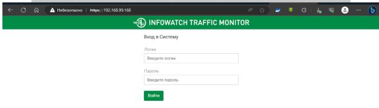

Групповые политики
Зайти в ТМ (ip посмотреть в AstraLinux)

Открыть браузер и перейти по нужному IP-адресу.
Используйте officer / xxXX1234 (в случае если они не сменены) для входа в веб-консоль TM.
Переходим в теги, и добавляем теги «Политика 5.1» «Политика 5.2» «Политика 5.3»

Задание 1
Чтобы добавить договор, переходим во вкладку «технологии» и «эталонные документы»

• Открываем пункт «Эталонные документы» и сверху «Добавить («+»)» «на основе текстовых данных»
• Находим наш документ и загружаем под именем «технология 5.1»
• Переходим в «Технологии» «бланки» и создаём категорию «Технология 5.1»
• Загружаем документ
• Дальше нам нужно создать объект защиты, для защиты документа.
• Переходим во вкладку «Объекты защиты»
• В пункте «Все элементы» создаём свою категорию «объект 5.1» и заходим в неё
• «Добавить («+»)» «Эталонные документы» «Договор» «Бланки» «Договор»
Обзываем «объект 5.1» и в условиях выбираем наши документы

• Не забываем сохранять конфигурацию, дабы не потерять сделанные дела.
• Далее переходим в «Политики»
• «Добавить политику» «политика защиты данных»
• Выдаём имя, и защищаемый объект

• Тыкайте везде сохранить, где можно, и где можно применить
• Создаём правило передачи со след. Настройками
• Тыкайте везде сохранить, где можно, и где можно применить
• Бегом на агента, и через сайт dlptest прокинуть документ, должно сработать.
Задание 2
Краткое описание задания: К документу нам надо искать Фамилии крутых челов
• Интересуют нас «Филиппов» и «Корнилов»
• Заходим в «Технологии» «Категории и термены»

• Создаём «Категория 5.2» с функцией «учитывать регистр»
• Заносим туда «Филиппов» и «Корнилов» с функцией учитывать морфологию и характеристический

Создаём объект защиты

Создаём политику

Задание 3
Краткое описание: Доки палить с фамилиями крутых челов и ещё печать.
Заходим в «технологии» «печати»
Создаём объект защиты

Создаём политику

Правило передачи